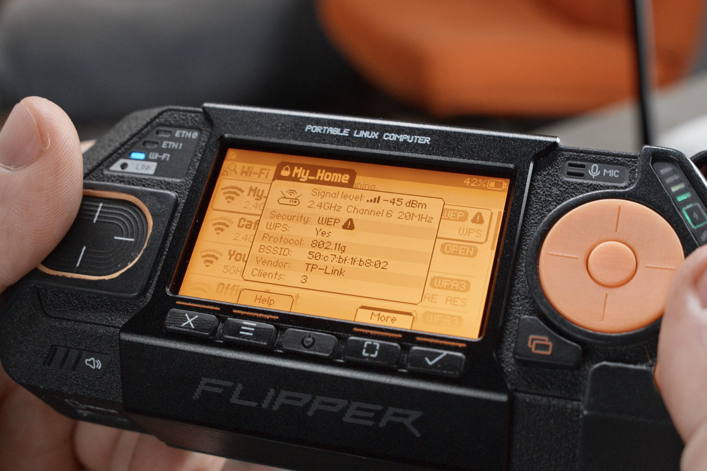

Компания Flipper Devices, прославившаяся «хакерским тамагочи» Flipper Zero, официально запустила предзаказ на Flipper One — устройство, которое сама называет «открытым Linux-мультиинструментом для высокопроизводительных вычислений и IP-сетей». Кампания идёт на Kickstarter: базовая цена $399, отправка первым бэкерам обещана в июле 2027 года. Для сравнения, текущий Flipper Zero стоит $169.
В Flipper подчёркивают: Flipper One — не преемник Zero, а совершенно другой продукт. Если Zero работал с NFC, RFID, инфракрасным портом и субгигагерцовыми радиочастотами, то One сделан ставку на вычисления и сети: два гигабитных Ethernet-порта, интерфейсы PCIe, SATA и USB 3.0, Wi-Fi 6e и слот расширения M.2. В него ставятся сменные модули — 5G-модем или LoRa-радио с mesh-сетью, превращающее девайс в рацию.
Сердце устройства — восьмиядерный ARM-процессор RK3576 с выделенным NPU (нейроускорителем) и GPU, способным выводить картинку на внешний монитор по USB-C или HDMI. То есть в кармане помещается компьютер, на котором можно и локальные модели крутить, и сеть диагностировать двумя портами напрямую, и медиаплеер из него собрать, подключив к телевизору. Управляет всем Flipper OS — надстройка над стандартным Debian Linux с переключаемыми профилями под разные задачи, чтобы эксперименты не ломали систему.
Flipper One — редкий случай «железного» кибердека, который официально дружит с ИИ: NPU в столь компактном сетевом инструменте — прямой сигнал, что локальные инференс-нагрузки переезжают из датацентров в карманы. Для тех, кто исследует ИИ-агентов на пересечении с сетевой безопасностью, это по сути готовая лаборатория в форм-факторе павербанка — правда, ждать её почти год.
Отдельного официального анонса с техническими деталями на страницах Flipper больше, чем в прессе: конфигурации модулей M.2 и сроки отгрузки обещают раскрывать по ходу кампании на Kickstarter.